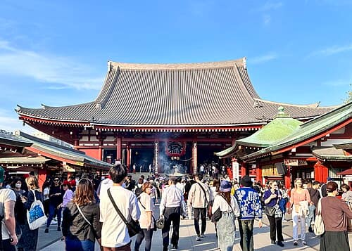
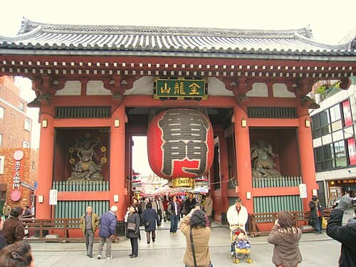

Must seePhoto: Akonnchiroll · CC0 1.0
Sensō-ji
Taitō-ku · Sight
Recommended by Wikipedia, Go Tokyo

Must seePhoto: Akonnchiroll · CC0 1.0
Taitō-ku · Sight
Recommended by Wikipedia, Go Tokyo

Must seePhoto: Daderot · Public domain
Taitō-ku · Sight
Recommended by Wikipedia, Go Tokyo
Taitō-ku · Eat & drink
Recommended by Time Out, The Japan Times
tokyo-selected — 8 labelled pins, 16 dots, clear map 70%.